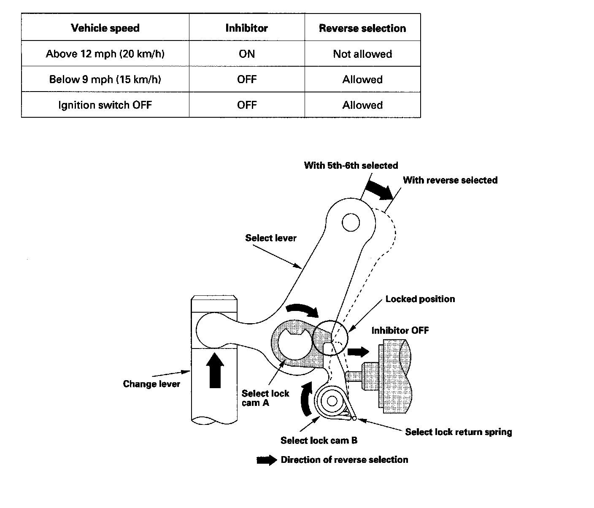

Gear Lockout: Description and Operation
System DescriptionAt a vehicle speed of 12 mph (20 km/h) or more, the ECM receives a signal from the output shaft (countershaft) speed sensor and activates the reverse lockout solenoid, which pushes select lock cam B into the locked position. As a result, the select lever can not rotate to the reverse select position, making it impossible to engage reverse gear. At a vehicle speed of 9 mph (15 km/h) or less, the signal from the output shaft (countershaft) speed sensor is interrupted, the ECM turns off the reverse lockout solenoid. The select lock return spring pulls back select lock cam B, enabling the select lever to move freely so the reverse gear can be selected.
